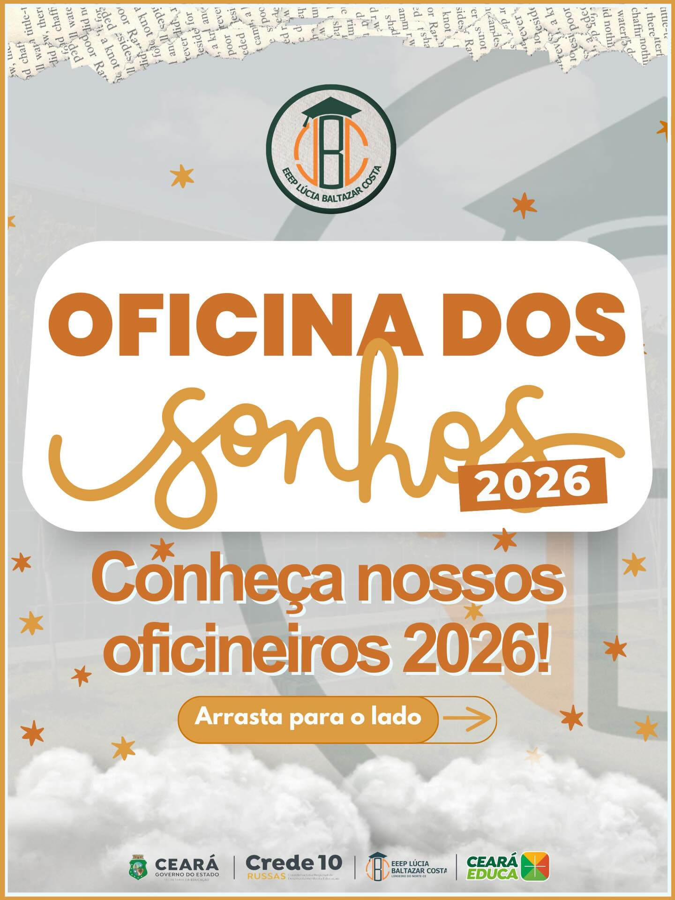

Oficina dos Sonhos
Primeiro Evento de começo do ano, é um evento onde os alunos veteranos ensinam para os novatos, os locais, regras, horários dentre outras coisas sobre a escola. além disso, são proporcionadas atividades interativas em equipes para os alunos irem se conhecendo.